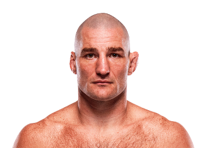

Sean Strickland es un peleador estadounidense de artes marciales mixtas nacido el 27 de febrero de 1991 en California, Estados Unidos. Compite en la división de peso medio de la UFC y es conocido por su estilo de pelea basado en el boxeo y la presión constante. Strickland ganó gran reconocimiento cuando derrotó a Israel Adesanya y se convirtió en campeón de peso medio de la UFC.

Strickland es conocido por su estilo de presión constante hacia adelante y su defensa basada en el movimiento de hombros y el control de la distancia.
Su estilo único y su personalidad directa lo han convertido en uno de los peleadores más reconocidos dentro de la UFC.